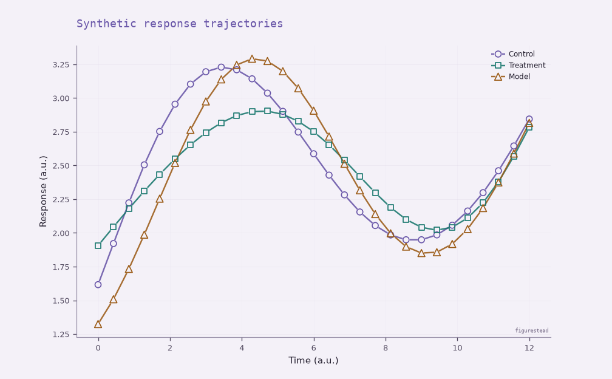
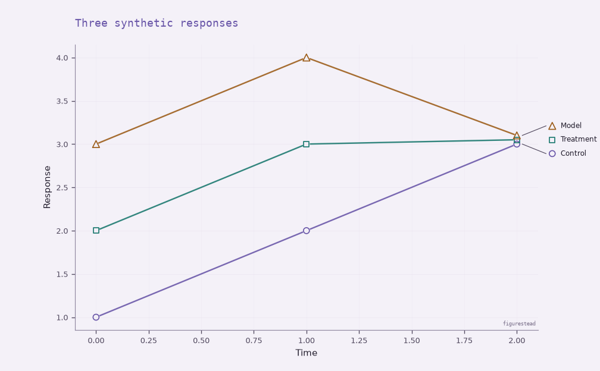
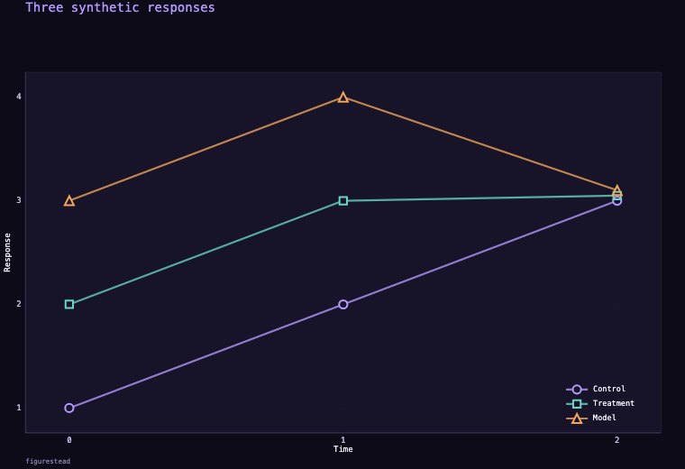
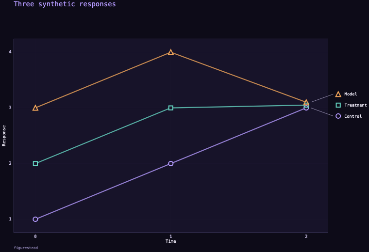

Lavender Fog Notebook · Python 0.9.0a2
{kind=link}

Ordinary legend · 1008 × 624, 120 dpi. Open for native size.
Same figure with optional direct labels
{kind=link}

Current public alpha / alpha.3
Scientific line figures with color + marker identity across Python and browser surfaces, matching line-and-marker legends, and optional direct labels that reuse the same body identity.
Python 0.9.0a2
Browser 0.9.0-alpha.3
Coordinated prerelease ↗
01
Current published alpha: persistent circle, square and upright-triangle identities with matching line-and-marker legends. The paired direct-label views reuse that identity. These synthetic product examples do not expand the reference-theme designation.

Ordinary legend · 1008 × 624, 120 dpi. Open for native size.


Ordinary legend · 760 × 520 CSS/raster, DPR 1. Open for native size.

The converging observations remain close; direct labels separate names, not observations. Each pair keeps its data and output dimensions fixed. Python and Canvas share identity semantics, not pixel-identical rendering. Page reductions are previews, not readability qualification. Unsupported direct-label layouts retain the ordinary legend.
02
The default first-three-series line profile uses S1 open circle, S2 open square and S3 open upright triangle. Lines remain solid and equal in semantic weight. Color + shape carry identity; line rhythm stays available for independent scientific semantics.
A documented exemplar of the bounded three-series line profile. The current Python specimen above demonstrates matching line + marker + label legends, with own-line-only clipping beneath open markers.
The independently authored dark exemplar for the same bounded profile. The current terminal-Canvas specimen demonstrates the same identity semantics through its own rendering implementation.
Python series_slots carries identity through supported filtering/reordering. Browser keyed setData updates retain established identity and partial overrides; setConfig remains a replacement/reset boundary.
Opt in with Python direct_labels=True or browser style.directLabels: true. The one-panel, 2–3-series treatment supports single-line printable ASCII labels. Unsupported geometry/text or insufficient fit restores the entire ordinary legend. Active browser transitions use ordinary treatment until settled; exports without trustworthy measurement keep the ordinary legend.
“Reference” means an evidence-backed exemplar for the documented rendering conditions, not universal qualification or a default-theme change. Close or overlapping observations may remain difficult to distinguish. No universal accessibility, CVD-user, physical-print, six-series or arbitrary reduced-size readability claim is made. Read the reference profile and its limits.
03
Python and browser implementations share a figure-contract vocabulary, not pixel-identical output or identical coverage.
python -m pip install "figurestead==0.9.0a2"npm install @figurestead/web@0.9.0-alpha.3Use @alpha to follow the prerelease channel. The unqualified latest tag remains on alpha.1.
Ordinary legend ↔ direct labels: the bounded public example · Current installation and API guidance
04
Reproducible product examples and explicit contracts. These deterministic synthetic figures are demonstrations, not scientific findings or a new qualification campaign.
Published package versions and hashes, deterministic 29-observation trajectories, Python/Canvas runtime facts, identical within-runtime pair inputs, and four exact image hashes.
Recorded normal-color and grayscale inspection at declared sizes. The designation does not extend to every plot family, semantic token, density or override.
The explicit single-layer audit takes the actual substrate, opacity and compositing facts. Static palette inspection alone is not a measurement of the rendered figure; neither audit is a whole-figure visibility guarantee.
Actual body identity, final authored observations, bounded placement and whole-treatment ordinary-legend fallback. Real text measurement and geometry determine local fit.
Archive
The previous Slipware hero, six-theme palette catalog, old installation examples and Evidence Atlas remain available as historical material. They are not current-alpha specimens or current qualification evidence.
Earlier-alpha gallery and palette catalog · Retained earlier-alpha Evidence Atlas
{kind=link}
{kind=link}